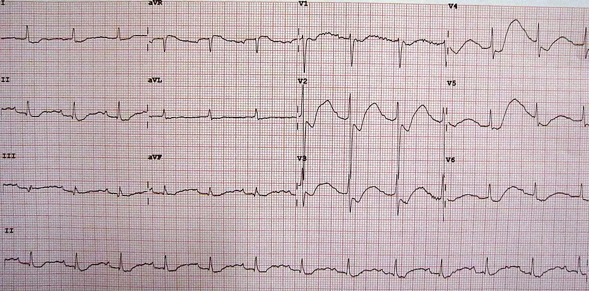

DX.9 — Acidocétose diabétique
1. Définition
L'acidocétose diabétiqueUrgence métabolique par déficit absolu ou relatif en insuline, avec production excessive de corps cétoniques. associe trois critères. Le premier critère est une hyperglycémie ou un diabète connu. Le deuxième est une cétonémieConcentration sanguine des corps cétoniques, surtout du bêta-hydroxybutyrate. de 3,0 mmol/L ou plus1. Le troisième est une acidose métabolique, avec pH inférieur à 7,30 ou bicarbonates inférieurs à 18 mmol/L1. Cette définition vient du consensus 2024 de l'ADA, de l'EASD et du JBDS1.
2. Épidémiologie (Suisse, puis Europe)
En Suisse, 6,2 % des 15 ans et plus déclaraient un diabète ou son traitement en 2022 (OFS)4. De 2010 à 2018, 5544 hospitalisations pour acidocétose sont survenues, soit 7,46 pour 100 000 personnes-années (OFS)3, surtout chez l'adolescente en type 1 et l'homme âgé en type 2. La mortalité hospitalière reste inférieure à 1 % parmi les épisodes bien traités (ADA 2024)1 ; dépister tôt le type 1 prévient l'acidocétose qui le révèle.
| Situation étudiée | Effectif ou proportion mesurée (nombre de cas, % ou pour 100 000 personnes-années) | Lecture clinique |
|---|---|---|
| Hospitalisations selon le type de diabète | 3847 en type 1 ; 1697 en type 2431 | Le type 1 domine avant 30 ans (97,2 % des cas)431 |
| Pic d'incidence en type 1431 | Filles 17,67 ; garçons 13,87 pour 100 000 personnes-années (10 à 19 ans)431 | L'adolescente est la plus exposée |
| Incidence en type 2431 | 5,26 (femmes) et 6,82 (hommes) à 60-90 ans431 | Le risque croît avec l'âge |
| Admission en soins intensifs | 38,1 % des enfants ; 55,5 % des adolescents431 | Gravité initiale élevée |
| Œdème cérébral, mortalité des moins de 20 ans431 | 0,4 % ; 0,1 % à l'hôpital431 | Rare mais redouté chez l'enfant |
| Mortalité hospitalière à 20 ans et plus431 | 3,9 % | Plus élevée chez le sujet âgé |
| Réhospitalisation dans l'année (moins de 20 ans)431 | 22,0 % | La récidive est fréquente |
| Adultes découvrant leur diabète de type 1 (parmi les adultes atteints)431 | 6 à 21 % par une acidocétose1 | L'acidocétose révèle souvent le diabète de type 1 de l'adulte (consensus ADA 2024)1 |
| Facteur déclenchant (parmi les épisodes) | 14 à 58 % par une infection1 | L'infection est le déclencheur le plus fréquent (consensus ADA 2024)1 |
| Forme euglycémiqueGlycémie inférieure à 11,1 mmol/L malgré les critères de cétose et d'acidose ; fréquent sous inhibiteur du SGLT2. (parmi les acidocétoses)1 | Environ 10 %1 | Une glycémie normale n'exclut pas l'acidocétose (consensus ADA 2024)1 |
| Durée de séjour et suites après un épisode | 3 à 5,6 jours d'hospitalisation ; mortalité à un an treize fois supérieure à celle de la population générale1 | Les enjeux sont lourds, car le séjour se prolonge et les récidives restent fréquentes (consensus ADA 2024)1 |
3. Physiopathologie
Le moteur est le déficit en insuline, associé à l'excès d'hormones de contre-régulation : glucagon, cortisol, adrénaline, hormone de croissance. La cascade comprend quatre temps.
Du niveau moléculaire au niveau clinique, la cascade suit quatre temps. Au niveau moléculaire, la chute de l'insuline libère la lipase hormono-sensible de son frein. Au niveau cellulaire, l'hépatocyte oxyde les acides gras, ce qui produit des cétones. Au niveau tissulaire, l'acidose et la déshydratation touchent rein, cerveau et cœur. Au niveau clinique, le patient présente polyurie, Kussmaul et confusion.
- Amorce. Un arrêt d'insuline, une infection ou un infarctus fait chuter le rapport insuline/glucagon.
- Développement. Le foie augmente la néoglucogenèseFabrication de glucose à partir des acides aminés et du lactate. et la glycogénolyse ; les muscles et la graisse captent moins de glucose. La lipolyseLe tissu adipeux libère alors ses acides gras. déverse des acides gras libres.
- Installation. Le foie oxyde ces acides gras en corps cétoniquesBêta-hydroxybutyrate (le principal), acétoacétate et acétone ; ce sont des acides forts.. Ils consomment les bicarbonates et créent une acidose à trou anionique.
- Maintien. L'hyperglycémie provoque une diurèse osmotiquePerte d'eau et de sels dans l'urine, entraînée par le glucose non réabsorbé.. L'hypovolémie réduit la filtration glomérulaire, donc l'élimination du glucose et des cétones : le cercle s'entretient.
Les pertes touchent aussi le potassium (déficit total de 3 à 6 mmol/kg), le sodium et le phosphate1. La kaliémie initiale reste pourtant normale ou haute, car l'acidose et le manque d'insuline chassent le potassium hors des cellules. L'insuline le fait rentrer : d'où le risque d'hypokaliémie sous traitement.
Ces mécanismes expliquent les complications. La déshydratation donne l'insuffisance rénale aiguë, qui touche la moitié des patients. Le passage rapide de l'eau dans les neurones donne l'œdème cérébralGonflement du cerveau par entrée d'eau ; rare chez l'adulte (moins de 0,1 %), plus fréquent chez l'enfant.1. L'état inflammatoire favorise la thrombose.
| Lésion ou perturbation | Exploration qui la montre | Thérapeutique et mécanisme |
|---|---|---|
| Déficit en insuline, cétogenèse | Bêta-hydroxybutyrate ≥ 3,0 mmol/L1 | Actrapid HMDCI : insuline humaine (Actrapid HM, n° 44610) Classe : insuline à action rapide (ATC A10AB01) Groupe : insulines et analogues (ATC A10A). Chefs de file :
|
| Hyperglycémie, diurèse osmotique | Glycémie capillaire, osmolalité calculée | Remplissage par Chlorure de sodium 0,9 % BaxterDCI : chlorure de sodium en solution isotonique (n° 41181) Classe : soluté de remplissage isotonique (ATC B05BB01) Groupe : solutions pour perfusion intraveineuse (ATC B05B)1. Chefs de file :
|
| Acidose à trou anionique | pH veineux, bicarbonates, trou anionique supérieur à 12 mmol/L1 | Insuline et remplissage ; Natrium Bicarbonicum Bichsel 8,4 %DCI : bicarbonate de sodium (n° 36797) Classe : alcalinisant (ATC B05BB01) Groupe : additifs et solutions électrolytiques (ATC B05B)1. Chefs de file :
|
| Déficit potassique masqué | Kaliémie à l'admission et 2 h après l'insuline1 | Kaliumchlorid 7,45 % B.BraunDCI : chlorure de potassium (n° 29552) Classe : électrolyte, apport potassique (ATC B05XA01) Groupe : additifs électrolytiques (ATC B05X). Chefs de file :
|
| Fuite de phosphate | Phosphatémie inférieure à 1,0 mmol/L1 | Kaliumphosphat 1 molar B.BraunDCI : phosphate de potassium (n° 45880) Classe : électrolyte, apport phosphoré et potassique (ATC B05XA06) Groupe : additifs électrolytiques (ATC B05X). Chefs de file :
|
| Hypoperfusion, état prothrombotique | Clinique, D-dimères si suspicion | Prophylaxie par Clexane®DCI : énoxaparine (Clexane®, n° 49456) Classe : héparine de bas poids moléculaire (ATC B01AB05) Groupe : antithrombotiques (ATC B01). Chefs de file :
|
4. Démarche diagnostique
Tout patient hyperglycémique ou polyurique reçoit une glycémie capillaire. Il reçoit aussi un bêta-hydroxybutyrate capillaireDosage au bout du doigt du principal corps cétonique. Le seuil diagnostique est de 3,0 mmol/L1. La sensibilité et la spécificité dépassent 90 %1.1. Le médecin exclut d'abord les drapeaux rouges, puis suit les étapes.
Étape 1. On cherche d'abord les drapeaux rouges (🚩 = menace vitale).
| Drapeau | Signe ou examen qui tranche | Piège | Diagnostic associé et conduite |
|---|---|---|---|
| 🚩 Stupeur ou comaRouge : l'acidocétose est alors sévère (pH inférieur à 7,0, cétonémie supérieure à 6,0 mmol/L) ; le patient va en soins intensifs1. Penser aussi à un AVC ou à un œdème cérébral. | Glasgow, pH, osmolalité ; scanner cérébral si déficit focal | Attribuer la confusion à l'ivresse | Acidocétose sévère ou état mixte : soins intensifs |
| 🚩 Choc ou hypotensionRouge : la déshydratation (jusqu'à plusieurs litres) ou un sepsis fait chuter la pression artérielle et abîme les reins. | Pression artérielle, lactate, hémocultures | Croire que la déshydratation seule explique le choc | Sepsis déclencheur : remplissage et antibiotiques précoces |
| 🚩 Kaliémie inférieure à 3,5 mmol/LRouge : l'insuline la baisserait encore et provoquerait arythmie et paralysie respiratoire1. | Kaliémie et ECG avant la première insuline | Lancer l'insuline sans attendre la kaliémie | Potassium 10 mmol/h ; insuline retardée jusqu'à K+ supérieur à 3,5 mmol/L1 |
| 🚩 Kaliémie supérieure à 5,5 mmol/L avec ondes T hautesRouge : risque de fibrillation ventriculaire ; fréquent en cas d'insuffisance rénale1. | ECG, kaliémie répétée | Ajouter du potassium d'emblée | Pas de potassium tant que K+ dépasse 5,0 mmol/L1 |
| 🚩 Douleur abdominale persistanteRouge : elle peut cacher une pancréatite, une ischémie mésentérique ou une appendicite qui a déclenché l'acidocétose. | Lipase, imagerie si la douleur persiste après réhydratation | La croire due à la cétose seule | Imagerie et avis chirurgical |
| 🚩 GrossesseRouge : risque fœto-maternel majeur ; l'acidocétose survient parfois avec une glycémie basse. | β-hCG, glycémie, BHB | Écarter le diagnostic car la glycémie est inférieure à 11,1 mmol/L1 | Avis obstétrical et senior immédiat1 |
| 🚩 Traitement par inhibiteur du SGLT2Rouge : acidocétose possible avec une glycémie inférieure à 14 mmol/L ; l'AIPS impose le test de cétones devant tout symptôme digestif ou respiratoire1. | BHB capillaire malgré une glycémie quasi normale | Écarter l'acidocétose car la glycémie est basse | Arrêter le Jardiance®DCI : empagliflozine (Jardiance®, n° 63227) Classe : inhibiteur du cotransporteur sodium-glucose SGLT2 (ATC A10BK03) Groupe : antidiabétiques oraux hors insuline (ATC A10B). Chefs de file :
|
| 🚩 Fièvre, toux, dysurieRouge : l'infection est le déclencheur le plus fréquent (14 à 58 %) ; elle impose cultures et antibiotiques1. | Hémocultures, radiographie du thorax, analyse d'urine | Oublier que la fièvre manque souvent en cas d'acidocétose | Antibiothérapie ciblée selon le foyer |
Étape 2. Sans urgence immédiate, cinq étapes mènent au diagnostic.
- On mesure la glycémie et le bêta-hydroxybutyrate capillaires dès l'arrivée.
- On prélève un gaz du sang veineux, l'ionogramme, l'urée, la créatinine et le lactate.
- On applique les trois critères : hyperglycémie ou diabète connu, cétonémie ≥ 3,0 mmol/L, pH < 7,30 ou bicarbonates < 18 mmol/L1.
- On classe la gravité (légère, modérée, sévère) pour choisir le lieu de soins.
- On cherche le déclencheur : infection, oubli d'insuline, infarctus, AVC, pancréatite, médicament.
Le détail figure dans la fenêtre diagnostics différentiels dangereux.
5. Anamnèse ciblée et drapeaux rouges
Chaque question change la décision, car elle cherche la cause du déficit en insuline ou une complication.
Pour l'acidocétose diabétique, l'interrogatoire suit les questions clés de l'anamnèse, chacune avec sa raison physiopathologique.
Les drapeaux rouges actionnables commandent chacun un geste. Un coma ou une stupeur impose les soins intensifs. Une kaliémie inférieure à 3,5 mmol/L impose de retarder l'insuline1. Une douleur abdominale persistante impose l'imagerie. Une grossesse impose l'avis obstétrical. Une glycémie normale sous SGLT2 impose le dosage du BHB1.
6. Examen physique ciblé, région par région
L'examen décrit le normal avant le pathologique. Les sources lues ne donnent pas de sensibilité chiffrée pour ces signes : la valeur est qualitative.
L'examen ciblé recherche d'abord : signes vitaux, respiration et hydratation. Il recherche enfin : abdomen, neurologie, cœur et poumons et peau, pieds, points d'injection. Pour l'acidocétose diabétique, chaque fenêtre décrit le signe, la technique et l'aspect.
7. Approche syndromique
Cinq syndromes composent le tableau. Chacun sépare les signes fonctionnels des signes physiques.
Chaque syndrome figure dans sa fenêtre, avec ses signes et leur mécanisme : syndrome polyuro-polydipsique, syndrome de déshydratation et syndrome d'acidose métabolique. Les fenêtres syndrome abdominal pseudo-chirurgical et syndrome neurologique et dyskaliémique complètent la liste.
8. Diagnostic positif et critères
Le consensus de l'ADA, de l'EASD, du JBDS, de l'AACE et du DTS (2024) exige les trois critères ensemble1.
| Critère | Seuil |
|---|---|
| Hyperglycémie ou diabète connu | Glycémie ≥ 11,1 mmol/L ou diabète déjà connu, quelle que soit la glycémie1 |
| Cétonémie | Bêta-hydroxybutyrate ≥ 3,0 mmol/L (ou cétonurie ≥ 2+)1 |
| Acidose métabolique | pH < 7,30 ou bicarbonates < 18 mmol/L1 |
Le détail figure dans la fenêtre gravité.
Ce qui ne suffit pas : une glycémie élevée seule, une cétonurie seule ou un trou anionique seul. La glycémie reste inférieure à 11,1 mmol/L dans l'acidocétose euglycémique1. La bandelette urinaire mesure l'acétoacétate et non le bêta-hydroxybutyrate : elle sous-estime la cétose au début et la surestime ensuite1. Le trou anionique ne constitue ni un critère diagnostique ni un critère de guérison.
9. Examens complémentaires
9.a Gold standard
Aucun examen unique n'existe : le diagnostic est biologique et repose sur la triade. Le bêta-hydroxybutyrate capillaire ou veineux à 3,0 mmol/L ou plus est corrélé à l'acidose, avec une sensibilité et une spécificité supérieures à 90 % (ADA 2024)1. Il se prescrit avec le gaz du sang veineux.
9.b Examens de 1re intention1
Ils se font tous à l'arrivée, avant l'insuline. Le candidat prescrit d'abord la glycémie et BHB capillaires, puis le gaz du sang veineux avec lactate, l'ionogramme, l'urée, la créatinine, l'osmolalité calculée, l'hémogramme, CRP, ECG, analyse d'urine.
Le bilan comprend d'abord : bêta-hydroxybutyrate capillaire, pH veineux et bicarbonates. Il comprend enfin : kaliémie, natrémie corrigée, trou anionique et osmolalité calculée (2 × Na + glucose + urée)1. Pour l'acidocétose diabétique, chaque fenêtre précise valeurs, interprétation et pièges.
La fenêtre ECG d'hypokaliémie profonde montre l'image interprétée en regard de son cliché brut.
Les cas discordants se lisent ainsi. Une glycémie basse avec cétonémie élevée oriente vers une acidocétose euglycémique (inhibiteur du SGLT2, grossesse, alcool). Une cétonurie positive avec bicarbonates normaux oriente vers une cétose sans acidose. Un pH bas sans cétones oriente vers une acidose lactique ou toxique.
9.c Alternatives
La fenêtre alternatives et populations précise cette étape.
9.d Examens de 2e intention1
On les demande selon le déclencheur suspecté : hémocultures, radiographie du thorax, lipase, troponine, β-hCG, HbA1c, tomodensitométrie cérébrale si déficit ou coma. Le dosage du C-peptide et des auto-anticorps précise le type de diabète après la phase aiguë. On passe à ces examens quand le bilan de base ne révèle aucun déclencheur évident.
10. Arbre décisionnel
L'arbre exclut d'abord le danger, puis classe la crise1,2.
• Nœud 1 : le patient est hyperglycémique ou polyurique1. Mesure glycémie et BHB capillaires1. Si BHB < 1,0 mmol/L alors la cause est autre et l'arbre s'arrête1. Si BHB ≥ 1,0 mmol/L alors on passe au nœud 21.
• Nœud 2 : on prélève un gaz du sang veineux1. Si pH < 7,30 ou bicarbonates < 18 mmol/L et BHB ≥ 3,0 mmol/L alors il s'agit d'une acidocétose et on passe au nœud 31. Si pH ≥ 7,30 et BHB < 3,0 mmol/L avec osmolalité ≥ 320 mOsm/kg alors il s'agit d'un état hyperosmolaire1. Si critères des deux alors il s'agit d'un état mixte, traité selon le protocole d'acidocétose.
• Nœud 3 : on classe la gravité1. Si pH < 7,0, stupeur ou BHB > 6,0 mmol/L alors le patient va en soins intensifs1. Si pH 7,0 à 7,25 alors le patient va en soins intermédiaires1. Si pH > 7,25 alors le patient va en unité de surveillance1.
• Nœud 4 : on lit la kaliémie1. Si K+ < 3,5 mmol/L alors on donne le potassium d'abord et l'insuline après1. Si K+ 3,5 à 5,0 alors on donne l'insuline et le potassium ensemble1. Si K+ > 5,0 alors on donne l'insuline seule et on recontrôle à 2 h1.
• Nœud 5 : on cherche le déclencheur1. Si fièvre ou foyer alors on prélève des cultures et on donne des antibiotiques1. Si douleur thoracique alors on fait un ECG et une troponine. Si douleur abdominale persistante alors on dose la lipase et on demande une imagerie. Si SGLT2 alors on discute l'arrêt définitif.
• Nœud 6 : on vérifie la résolution1. Si BHB < 0,6 mmol/L et pH ≥ 7,3 ou bicarbonates ≥ 18 mmol/L alors on relaie par voie sous-cutanée avec un chevauchement d'1 à 2 h1. Sinon, on poursuit la perfusion d'insuline.
11. Prise en charge selon les recommandations suisses
La conduite suit le consensus 2024 de l'ADA, de l'EASD et du JBDS1, tandis que les doses des médicaments suivent l'AIPS suisse.
11.A But thérapeutique
- En 1 heure, le volume circulant est restauré, la kaliémie est connue et l'insuline est démarrée1.
- En 4 à 8 heures, la glycémie doit passer sous 13,9 mmol/L1.
- Jusqu'à la résolution, on vise un bêta-hydroxybutyrate < 0,6 mmol/L et un pH ≥ 7,3 ou des bicarbonates ≥ 18 mmol/L1. La glycémie visée est proche de 11,1 mmol/L et la kaliémie de 4 à 5 mmol/L1.
- En 24 à 48 heures, le déficit hydrique est corrigé1.
11.B Moyens
11.B.1 Urgence chronologique
| Temps | Geste | Dose et raison |
|---|---|---|
| 1. Minute 0 | Bilan vital, deux voies veineuses, monitorage, glycémie et BHB capillaires, gaz du sang, ionogramme | Poser le diagnostic et connaître la kaliémie avant l'insuline |
| 2. Heure 0 à 11 | Remplissage par Chlorure de sodium 0,9 % BaxterDCI : chlorure de sodium en solution isotonique (n° 41181) Classe : soluté de remplissage isotonique (ATC B05BB01) Groupe : solutions pour perfusion intraveineuse (ATC B05B)1. Chefs de file :
Classe : soluté cristalloïde balancé (ATC B05BB01) Groupe : solutions pour perfusion intraveineuse (ATC B05B). Chefs de file :
| 500 à 1000 mL/h pendant 2 à 4 h chez l'adulte sans atteinte cardiaque ou rénale1. Sujet âgé, insuffisant cardiaque ou dialysé : bolus de 250 mL1. L'AIPS donne 500 mL à 3 L/24 h et 2000 mL/h dans le choc1. |
| 3. Avant l'insuline | Contrôle de la kaliémie | K+ < 3,5 mmol/L : 10 mmol/h de Kaliumchlorid 7,45 % B.BraunDCI : chlorure de potassium (n° 29552) Classe : électrolyte, apport potassique (ATC B05XA01) Groupe : additifs électrolytiques (ATC B05X). Chefs de file :
|
| 4. Heure 1 | Insuline rapide intraveineuse : Actrapid HM | 0,1 U/kg/h à débit fixe ; bolus de 0,1 U/kg si l'accès veineux tarde1. L'AIPS autorise la voie intraveineuse mais ne fixe pas ce débit. |
| 5. Dès K+ < 5,0 mmol/L1 | Potassium dans les perfusions | 20 à 30 mmol/L de liquide, pour viser 4 à 5 mmol/L. AIPS : au plus 40 mmol/L, 10 mmol/h, diurèse contrôlée1 |
| 6. Glycémie < 13,9 mmol/L1 | Glucose 5 % B.BraunDCI : glucose monohydraté (n° 29550001) Classe : soluté d'hydrates de carbone (ATC B05BA03) Groupe : solutions pour perfusion intraveineuse (ATC B05B). Chefs de file :
| Éviter l'hypoglycémie et laisser la cétose se corriger |
| 7. Si pH < 7,01 | Natrium Bicarbonicum Bichsel 8,4 %DCI : bicarbonate de sodium (n° 36797) Classe : alcalinisant (ATC B05BB01) Groupe : additifs et solutions électrolytiques (ATC B05B)1. Chefs de file :
| 100 mmol dans 400 mL d'eau stérile toutes les 2 h jusqu'à pH > 7,0. AIPS : 1 mmol/kg, au plus 100 mmol, au plus 1,5 mmol/kg/h1 |
| 8. Si phosphatémie < 1,0 mmol/L avec faiblesse1 | Kaliumphosphat 1 molar B.BraunDCI : phosphate de potassium (n° 45880) Classe : électrolyte, apport phosphoré et potassique (ATC B05XA06) Groupe : additifs électrolytiques (ATC B05X). Chefs de file :
| 20 à 30 mmol ajoutés au liquide1 |
| 9. En continu | Traiter le déclencheur | Antibiotiques, revascularisation, arrêt du médicament en cause |
En cas d'acidocétose euglycémique, on ajoute le dextrose dès le début, avec le sérum physiologique. Hors soins intensifs, l'alternative est NovoRapid®. L'acidocétose légère ou modérée sans complication reçoit ce schéma toutes les 1 à 2 heures par voie sous-cutanée1.
11.B.2 Complications du traitement1
Le détail figure dans la fenêtre complications.
11.B.3 Hors urgence : relais et mesures générales1
- Les mesures générales consistent à manger dès la résolution, à surveiller la glycémie et à préserver un accès à l'insuline.
- Relais sous-cutané : basal-bolus, avec chevauchement de 1 à 2 h avant l'arrêt de la perfusion1. Lantus® 0,15 à 0,3 U/kg en basal dès la phase aiguë est une option.
- Dose journalière estimée : 0,5 à 0,6 U/kg chez le patient naïf, 0,3 U/kg en cas d'insuffisance rénale ou de fragilité1.
- Non pharmacologique : éducation structurée, règles des jours de maladie, mesure du bêta-hydroxybutyrate à domicile, capteur de glucose en continu.
- Social et professionnel : arrêt de travail pendant l'hospitalisation puis selon la récupération ; l'assurance-maladie (LAMal) rembourse les soins ; conduite et réinsertion se décident avec le diabétologue.
11.B.4 Situations spéciales
La fenêtre situations spéciales contient les données à retenir.
11.C Surveillance
La fenêtre surveillance précise ce point.
11.D Pronostic et sortie1
La résolution exige un bêta-hydroxybutyrate < 0,6 mmol/L et un pH ≥ 7,3 ou des bicarbonates ≥ 18 mmol/L1. Le retour à domicile demande six critères : résolution, alimentation normale, insuline sous-cutanée établie, éducation faite, approvisionnement en insuline assuré, suivi à 2 à 4 semaines1.
Le pronostic dépend du déclencheur. La mortalité hospitalière suisse est faible avant 20 ans et plus élevée ensuite (voir le point 2)1. Les priorités de recherche portent sur le choix du liquide, les débits d'insuline et le schéma de potassium.
12. Prévention
| Niveau | Gestes concrets | Population cible |
|---|---|---|
| Primaire | Reconnaître les symptômes du diabète de type 1 et doser la glycémie sans attendre ; ne pas prescrire d'inhibiteur du SGLT2 en type 1 ; arrêter l'inhibiteur lors de toute maladie aiguë, de jeûne ou de chirurgie (AIPS)6322765176 | Enfants, adolescents, adultes jeunes ; patients sous SGLT2 |
| Secondaire | Éducation structurée aux jours de maladie ; mesure du BHB à domicile ; ne jamais arrêter l'insuline basale ; capteur de glucose en continu (baisse de 53 % et 47 % des hospitalisations en France)6 | Diabétiques de type 1, patients avec antécédent6 |
| Tertiaire | Suivi à 2 à 4 semaines après la sortie ; dépistage psychique (PHQ-9) ; soutien social ; service d'appel 24 h ; approvisionnement en insuline6 | Patients avec acidocétose récidivante, troubles alimentaires, précarité |
Le lien avec l'épidémiologie est direct : l'adolescente est la plus exposée en Suisse, et 22 % des enfants sont réhospitalisés dans l'année3. La mise en garde suisse sur les inhibiteurs du SGLT2 vient de l'AIPS6322765176.
13. Points clés
- L'acidocétose exige trois critères réunis. Ce sont une hyperglycémie ou un diabète connu, un BHB ≥ 3,0 mmol/L et un pH < 7,30 ou des bicarbonates < 18 mmol/L3.
- Sous inhibiteur du SGLT2, une glycémie normale ne permet pas d'écarter l'acidocétose. Il faut alors doser le BHB (AIPS Jardiance®).
- Le remplissage vient avant l'insuline, et la kaliémie se connaît avant la première unité ; K+ < 3,5 mmol/L retarde l'insuline3.
- L'insuline se donne à 0,1 U/kg/h par voie intraveineuse, puis 0,05 U/kg/h avec dextrose dès 13,9 mmol/L de glycémie3.
- Le bicarbonate est réservé au pH < 7,0 ; le phosphate à une phosphatémie < 1,0 mmol/L avec faiblesse34588036797.
- La guérison se mesure au bêta-hydroxybutyrate < 0,6 mmol/L et au pH ≥ 7,3, pas à la glycémie ni à la cétonurie3.
14. Pièges et questions fréquentes à l'examen fédéral suisse
Une glycémie à 9 mmol/L exclut-elle l'acidocétose ? Réponse : Non : environ 10 % des cas sont euglycémiques, surtout sous inhibiteur du SGLT23.
Que dit l'AIPS de Jardiance® devant des nausées chez un diabétique ? Réponse : Il impose un test de cétones, quelle que soit la glycémie. Il impose aussi l'arrêt du médicament si l'acidocétose est suspectée.
Quelle bandelette utilise-t-on pour suivre la guérison ? Réponse : Aucune bandelette urinaire : elle mesure l'acétoacétate et trompe. On mesure le bêta-hydroxybutyrate sanguin.
L'AIPS de l'insuline humaine soluble fixe-t-il le débit d'insuline dans l'acidocétose ? Réponse : Non : il autorise la voie intraveineuse et donne 0,3 à 1,0 U/kg/jour par voie sous-cutanée344610.
Le trou anionique sert-il à juger la guérison ? Réponse : Non : l'acidose hyperchlorémique due au NaCl peut le tromper.
Quelle complication tue l'enfant en acidocétose ? Réponse : L'œdème cérébral est la complication fatale (0,4 % en Suisse)3. On donne le mannitol 0,5 à 1 g/kg en 10 à 15 minutes dès la suspicion ; l'imagerie ne doit jamais retarder le traitement831754. Selon l'AIPS, le mannitol est contre-indiqué en cas de déshydratation importante et d'hyperosmolarité plasmatique préexistante31754.
Insuline et bicarbonate dans l'acidocétose alcoolique ? Réponse : Non indiqués : on donne sérum physiologique et glucose5.
Sources bibliographiques
- [S1] Umpierrez GE, Davis GM, ElSayed NA et al. Hyperglycemic Crises in Adults With Diabetes: A Consensus Report. Diabetes Care 2024;47(8):1257-1275. PMID 39052901. DOI 10.2337/dci24-0032. https://pmc.ncbi.nlm.nih.gov/articles/PMC11272983/ — consulté le 27.10.2026.
- [S2] Dhatariya KK et al. Management of Hyperosmolar Hyperglycaemic State (HHS) in Adults: updated guideline from the Joint British Diabetes Societies for Inpatient Care. Diabet Med 2023;40(3). PMID 36370077. https://pmc.ncbi.nlm.nih.gov/articles/PMC10107355/ — consulté le 27.10.2026.
- [S3] Ebrahimi F, Kutz A, Christ ER, Szinnai G. Lifetime risk and health-care burden of diabetic ketoacidosis: a population-based study (données OFS, Suisse 2010-2018). Front Endocrinol 2022;13:940990. PMID 36093075. DOI 10.3389/fendo.2022.940990. https://www.frontiersin.org/journals/endocrinology/articles/10.3389/fendo.2022.940990/full — consulté le 27.10.2026.
- [S4] OFSP/Obsan, MonAM, Diabète (15 ans et plus), enquête suisse sur la santé OFS, 2022. https://ind.obsan.admin.ch/en/indicator/monam/diabetes-age-15 — consulté le 27.10.2026.
- [S5] Sibaï K, Eggimann P. Acidocétose alcoolique : une cause non rare d'acidose métabolique. Rev Med Suisse 2005;1(32):2106-2115. PMID 16238232 (résumé lu) — consulté le 27.10.2026.
- [S6] Mizuno A, Lolachi S, Pernet A. Acidocétose euglycémique : une complication des inhibiteurs de SGLT2. Rev Med Suisse 2017;13(565):1164-1167. PMID 28639760 (résumé lu) — consulté le 27.10.2026.
- [S7] AIPS, informations professionnelles suisses (texte français) : Actrapid HM n° 44610, NovoRapid® n° 55045, lispro n° 53290, Lantus® n° 55346, Jardiance® n° 63227, Clexane® n° 49456, chlorure de potassium B.Braun n° 29552, bicarbonate de sodium Bichsel n° 36797, chlorure de sodium 0,9 % Baxter n° 41181, glucose 5 % B.Braun n° 29550001, mannitol 20 % B.Braun n° 31754, Ringerlactat B.Braun n° 38207, phosphate de potassium B.Braun n° 45880 — consulté le 27.10.2026.
- [S8] Glaser N, Fritsch M, Priyambada L et al. ISPAD Clinical Practice Consensus Guidelines 2022: Diabetic ketoacidosis and hyperglycemic hyperosmolar state. Pediatr Diabetes 2022;23(7):835-856, section 8.2.1 (traduction officielle ISPAD lue). PMID 36250645. DOI 10.1111/pedi.13406. https://www.ispad.org/asset/7B84C430-D19A-4EB9-9027D0982A404301 — consulté le 27.10.2026.
- [S9] Wikimedia Commons, File:LowKECG.JPG, James Heilman, MD, licence CC BY-SA 3.0 (ECG d'un patient à kaliémie 1,1 mmol/L : sous-décalage ST, ondes T inversées, grandes ondes U). https://commons.wikimedia.org/wiki/File:LowKECG.JPG — consulté le 10.11.2026.
Questions clés de l'anamnèse
| Question clé | Raison physiopathologique | Conduite |
|---|---|---|
| Quel type de diabète, quel traitement ? | Le type 1 dépend de l'insuline ; le type 2 peut s'acidocétoser sous stress5 | Adapter l'insuline de relais |
| Quand a été faite la dernière injection ? Pompe en panne ? | L'arrêt d'insuline provoque la cétogenèseFabrication hépatique des corps cétoniques à partir des acides gras ; elle démarre en quelques heures sans insuline. en quelques heures | Corriger l'accès et l'éducation |
| Prenez-vous un inhibiteur du SGLT2 ? | Il augmente la glucosurieÉlimination urinaire du glucose ; elle abaisse la glycémie malgré l'acidocétose. et la cétogenèse ; la glycémie reste basse1,6 | Arrêter le Jardiance®, doser le BHB |
| Depuis combien de temps avez-vous soif, urinez-vous beaucoup ? | Quelques heures à quelques jours évoquent l'acidocétose ; des semaines évoquent l'état hyperosmolaireDéshydratation extrême installée sur des semaines, avec hyperosmolalité et sans cétose.1 | Orienter vers l'un ou l'autre |
| Vomissements, douleurs abdominales ? | Les corps cétoniquesAcides forts qui irritent la muqueuse digestive et ralentissent la vidange gastrique. les provoquent dans plus de 50 % des cas1 | Chercher une cause abdominale si elles persistent |
| Fièvre, toux, brûlures urinaires ? | L'infection élève les hormones de contre-régulationCortisol, adrénaline et glucagon : ils s'opposent à l'insuline. et déclenche 14 à 58 % des cas1 | Cultures et antibiotiques |
| Douleur thoracique, déficit neurologique ? | L'infarctus et l'AVC précipitent la décompensation | ECG, troponine, imagerie |
| Alcool, drogues ? | Ils favorisent vomissements, jeûne et oubli d'insuline | Distinguer l'acidocétose alcoolique |
| Corticoïdes, antipsychotiques, immunothérapie ? | Ils élèvent la glycémie ; les inhibiteurs de point de contrôle causent un diabète auto-immun brutal (1 à 2 %)1 | Revoir le médicament |
| Grossesse possible ? Troubles alimentaires ? Détresse sociale ? | Les troubles alimentaires et la précarité expliquent des oublis d'insuline répétés | β-hCG, soutien psychosocial |
Signes vitaux
| Normal attendu | Pathologique | Signes à rechercher (clic : technique, valeur, piège) |
|---|---|---|
| Température 36-37,5 °C, pouls et tension stables, 12 à 20 respirations par minute1 | Tachycardie, hypotension, polypnée, fièvre | Pression artérielle et poulsTechnique : tension couchée puis debout après 1 à 3 minutes, pouls compté 30 secondes1. Valeur : hypovolémie si pouls > 100/min ou systolique < 100 mmHg1. Piège : le bêta-bloquant masque la tachycardie. ; températureTechnique : thermomètre calibré. Valeur : fièvre = infection déclenchante. Piège : l'acidocétose peut exister sans fièvre malgré une infection. |
Respiration
| Normal attendu | Pathologique | Signes à rechercher (clic : technique, valeur, piège) |
|---|---|---|
| Respiration calme et régulière, sans odeur | Respiration ample et profonde, odeur fruitée | Respiration de KussmaulTechnique : observer la fréquence et l'amplitude au repos. Valeur : compensation respiratoire d'une acidose sévère. Piège : une pneumonie ou l'anxiété donnent aussi une polypnée. ; haleine acétonéeTechnique : sentir l'air expiré. Valeur : acétone présente, signe inconstant. Piège : beaucoup de personnes ne perçoivent pas l'odeur. |
Hydratation
| Normal attendu | Pathologique | Signes à rechercher (clic : technique, valeur, piège) |
|---|---|---|
| Muqueuses humides, pli cutané qui s'efface, remplissage capillaire inférieur à 2 s1 | Muqueuses sèches, pli persistant, yeux enfoncés | Pli cutané et muqueusesTechnique : pincer la peau du thorax, regarder la langue et la muqueuse jugale. Valeur : mesure qualitative de la déshydratation. Piège : peu fiable chez le sujet âgé. ; veines jugulairesTechnique : patient à 45°, regarder le remplissage de la veine1. Valeur : veines plates = hypovolémie. Piège : une insuffisance cardiaque modifie l'interprétation. |
Abdomen
| Normal attendu | Pathologique | Signes à rechercher (clic : technique, valeur, piège) |
|---|---|---|
| Souple, indolore | Douleur diffuse, défense | Palpation abdominaleTechnique : paume à plat, quadrants un à un, en finissant par la zone douloureuse. Valeur : une défense ou une douleur localisée qui persiste après réhydratation oriente vers une cause chirurgicale. Piège : la cétose seule donne une douleur diffuse. |
Neurologie
| Normal attendu | Pathologique | Signes à rechercher (clic : technique, valeur, piège) |
|---|---|---|
| Éveillé, orienté, Glasgow 15, pupilles symétriques1 | Somnolence, confusion, déficit focal | Score de GlasgowTechnique : ouverture des yeux, réponse verbale, réponse motrice, total sur 151. Valeur : suit la gravité et l'œdème cérébral. Piège : l'alcool ou un traumatisme modifient le score. ; déficit focal et pupillesTechnique : force, parole, réflexe pupillaire. Valeur : un déficit oriente vers un AVC ou un œdème cérébral. Piège : une hypoglycémie en cours de traitement simule un déficit. |
Cœur et poumons
| Normal attendu | Pathologique | Signes à rechercher (clic : technique, valeur, piège) |
|---|---|---|
| Bruits du cœur réguliers, murmure vésiculaire normal | Souffle, râles, arythmie | Auscultation cardio-pulmonaireTechnique : stéthoscope sur les quatre foyers et les bases. Valeur : foyer de pneumonie ou insuffisance cardiaque déclenchante. Piège : le remplissage massif peut décompenser un cœur fragile. |
Peau, pieds, points d'injection
| Normal attendu | Pathologique | Signes à rechercher (clic : technique, valeur, piège) |
|---|---|---|
| Peau intacte, sites d'injection souples | Abcès, ulcère, lipodystrophie | Inspection des pieds et des sites d'injectionTechnique : examen des espaces interdigitaux et du fond du pied. Valeur : foyer infectieux déclenchant. Piège : l'ulcère neuropathique est indolore. |
Syndrome polyuro-polydipsique
| Type | Signe (clic : définition) | Recherche (geste) | Mécanisme |
|---|---|---|---|
| Fonctionnel | PolyurieUrines abondantes, nocturnes aussi. Mécanisme : Le glucose non réabsorbé entraîne l'eau. | Demander le nombre de mictions par 24 h1 | Le glucose non réabsorbé entraîne l'eau |
| Fonctionnel | PolydipsieSoif intense. Mécanisme : L'hyperosmolalité stimule les centres de la soif. | Demander la quantité bue | L'hyperosmolalité stimule les centres de la soif |
| Fonctionnel | AmaigrissementPerte de poids récente. Mécanisme : Catabolisme par manque d'insuline. | Comparer au poids habituel | Catabolisme par manque d'insuline |
| Physique | GlycosurieGlucose dans l'urine. Mécanisme : Le seuil rénal du glucose est dépassé. | Bandelette urinaire : positive | Le seuil rénal du glucose est dépassé |
Syndrome de déshydratation
| Type | Signe (clic : définition) | Recherche (geste) | Mécanisme |
|---|---|---|---|
| Fonctionnel | Vertiges deboutÉtourdissement au lever. Mécanisme : Baisse du volume circulant. | Interroger sur la station debout | Baisse du volume circulant |
| Physique | Tachycardie, hypotensionPouls > 100/min, systolique < 100 mmHg1. Mécanisme : Hypovolémie par diurèse osmotique. | Mesures couché puis debout | Hypovolémie par diurèse osmotique |
| Physique | Muqueuses sèches, pli cutanéPerte de l'élasticité. Mécanisme : Déficit hydrique de plusieurs litres. | Pincer la peau, examiner la langue | Déficit hydrique de plusieurs litres |
| Physique | Oligurie tardiveDiurèse < 0,5 mL/kg/h1. Mécanisme : Insuffisance rénale aiguë fonctionnelle. | Sonde ou recueil horaire | Insuffisance rénale aiguë fonctionnelle |
Syndrome d'acidose métabolique
| Type | Signe (clic : définition) | Recherche (geste) | Mécanisme |
|---|---|---|---|
| Fonctionnel | Dyspnée, fatigueEssoufflement au repos. Mécanisme : Hyperventilation de compensation. | Interroger | Hyperventilation de compensation |
| Physique | Respiration de KussmaulRespirations profondes, régulières. Mécanisme : Le tronc cérébral augmente la ventilation pour éliminer le CO2. | Observer 1 minute | Le tronc cérébral augmente la ventilation pour éliminer le CO2 |
| Physique | Haleine acétonéeOdeur de pomme ou de vernis. Mécanisme : Élimination pulmonaire de l'acétone. | Sentir l'air expiré | Élimination pulmonaire de l'acétone |
| Biologique | Trou anionique supérieur à 12 mmol/LNa - (Cl + HCO3)1. Mécanisme : Accumulation d'anions cétoniques. | Calculer sur l'ionogramme | Accumulation d'anions cétoniques |
Syndrome abdominal pseudo-chirurgical
| Type | Signe (clic : définition) | Recherche (geste) | Mécanisme |
|---|---|---|---|
| Fonctionnel | Nausées, vomissements, douleur abdominalePrésents dans plus de 50 % des cas1. Mécanisme : Cétose, gastroparésie, déshydratation. | Interroger sur leur début | Cétose, gastroparésie, déshydratation |
| Physique | Douleur abdominale diffuse sans défense francheAbdomen sensible, souple. Mécanisme : Irritation par les corps cétoniques. | Palpation douce, puis profonde | Irritation par les corps cétoniques |
| Physique | Douleur persistante après réhydratationPersiste malgré la normalisation de l'acidose. Mécanisme : Cause chirurgicale ou pancréatique associée. | Réexaminer à 6 heures1 | Cause chirurgicale ou pancréatique associée |
Syndrome neurologique et dyskaliémique
| Type | Signe (clic : définition) | Recherche (geste) | Mécanisme |
|---|---|---|---|
| Fonctionnel | Céphalées, confusionTrouble de l'attention. Mécanisme : Acidose et hyperosmolalité cérébrales. | Tester l'orientation | Acidose et hyperosmolalité cérébrales |
| Physique | Somnolence, comaGlasgow inférieur à 151. Mécanisme : Acidose sévère ou œdème cérébral. | Score de Glasgow | Acidose sévère ou œdème cérébral |
| Physique | Faiblesse musculaire, ondes T anormalesHypo- ou hyperkaliémie. Mécanisme : Le potassium commande l'excitabilité cardiaque et musculaire. | Force segmentaire, ECG | Le potassium commande l'excitabilité cardiaque et musculaire |
Trou anionique
| Seuil | Signification | Conduite |
|---|---|---|
| > 12 mmol/L | Acidose à anions non mesurés | Ne pas l'utiliser comme critère de guérison |
Alternatives et populations
| Situation | Alternative ou adaptation | Limite |
|---|---|---|
| BHB capillaire non disponible | Cétonurie à la bandelette ; trou anionique supérieur à 12 mmol/L2 | Elle mesure l'acétoacétate ; faux positifs avec certains médicaments à groupe sulfhydryle1 |
| Grossesse | Même triade ; glycémie parfois < 11,1 mmol/L1 | Gaz du sang difficile à lire en cas d'hyperémèse |
| Enfant | Mêmes critères biologiques ; protocole pédiatrique | Œdème cérébral plus fréquent ; critères pédiatriques |
| DFGe < 30 mL/min1 | Même triade ; BHB parfois plus bas | Hyperglycémie, hyperosmolalité et hyperkaliémie plus fortes |
| Allergie aux produits iodés ou dispositif non compatible IRM | Aucune imagerie n'est requise pour poser le diagnostic | Imagerie seulement pour chercher un déclencheur : choisir l'échographie ou la tomodensitométrie sans produit de contraste |
ECG d'hypokaliémie profonde
ECG d'hypokaliémie profonde, un risque du traitement de l'acidocétose. ECG 12 dérivations, tracé de repos (kaliémie 1,1 mmol/L)9.

Lisez d'abord seul ce cliché (ecg d'hypokaliémie profonde, un risque du traitement de l'acidocétose) : cherchez vous-même le signe.
La copie annotée (ecg d'hypokaliémie profonde, un risque du traitement de l'acidocétose) numérote les repères décrits ci-dessous.
- V2 : une grande onde U suit l'onde T
- V4 : l'onde U est aussi ample que l'onde T
- D2 : le segment ST est sous-décalé et l'onde T aplatie
- Une onde U ample peut passer pour un allongement du QT
- L'insuline fait baisser la kaliémie : le tracé initial ne protège pas
Ce que l'image décide. Si K+ < 3,5 mmol/L, on donne le potassium avant l'insuline et on surveille l'ECG1.

Diagnostics différentiels dangereux
| Diagnostic dangereux à écarter | Signe ou examen qui tranche | Piège |
|---|---|---|
| Syndrome hyperosmolaireGlycémie ≥ 30 mmol/L, osmolalité ≥ 320 mOsm/kg, sans cétose ni acidose2. | Bêta-hydroxybutyrate ≤ 3,0 mmol/L et pH > 7,32 | Un tiers des crises sont mixtes1 |
| Cétoacidose alcoolique | Alcool, vomissements, glycémie basse ou normale, bêta-hydroxybutyrate élevé | Donner de l'insuline et du bicarbonate : ils ne sont pas indiqués5 |
| Cétose de jeûne | Bicarbonates supérieurs à 18 mmol/L, pas de diabète5 | Confondre une cétonurie positive avec une acidocétose |
| Acidose lactique | Lactate élevé, cétones basses | Les deux peuvent coexister (sepsis) |
| Intoxication (salicylés, méthanol, éthylène glycol) | Trou osmolaire, anamnèse, dosages toxicologiques | Un diabétique intoxiqué reste un diabétique |
| Abdomen aigu chirurgical | Douleur qui persiste après réhydratation, lipase, imagerie | Opérer à tort ou retarder l'opération |
Gravité
| Gravité | pH | Bicarbonates | Bêta-hydroxybutyrate | Conscience | Lieu de soins |
|---|---|---|---|---|---|
| Légère | > 7,25 à < 7,301 | 15 à 18 mmol/L1 | 3,0 à 6,0 mmol/L1 | Éveillé | Unité ordinaire ou surveillance |
| Modérée | 7,0 à 7,25 | 10 à < 15 mmol/L1 | 3,0 à 6,0 mmol/L1 | Éveillé ou somnolent | Soins intermédiaires |
| Sévère | < 7,0 | < 10 mmol/L | > 6,0 mmol/L | Stupeur ou coma | Soins intensifs |
Complications
| Complication | Conduite chronologique | Prévention |
|---|---|---|
| Hypoglycémie (16 à 28 %)1 | 1. Arrêter ou réduire l'insuline ; 2. glucose intraveineux ; 3. contrôle à 15 min1 | Glycémie toutes les 1 à 2 h, dextrose dès 13,9 mmol/L1 |
| Hypokaliémie (environ 55 %)1 | 1. Potassium 10 mmol/h ; 2. ECG ; 3. insuline en pause si K+ < 3,51 | Kaliémie à 2 h puis toutes les 4 h1 |
| Acidose hyperchlorémique | Surveiller ; elle disparaît seule et ne justifie pas de prolonger l'insuline | Préférer un cristalloïde balancé |
| Œdème cérébral | 1. Traiter dès la suspicion : Mannitol 20 % B.BraunDCI : mannitol (n° 31754) Classe : diurétique osmotique (ATC B05BC01) Groupe : solutions pour perfusion intraveineuse (ATC B05B). Chefs de file :
| Corriger lentement ; surveiller la conscience |
| Insuffisance rénale aiguë | Réhydrater ; surveiller la créatinine chaque jour | Éviter les néphrotoxiques |
| Thrombose | Prophylaxie par Clexane® 40 mg/jour (AIPS)49456 ; traitement complet si thrombose suspectée | Mobilisation, hydratation |
| Surcharge hydrique | Réduire le remplissage, diurétique si besoin | Bolus de 250 mL chez le sujet à risque1 |
Situations spéciales
| Situation | Conduite |
|---|---|
| Grossesse et allaitement | Avis obstétrical immédiat. L'insuline reste admise (AIPS : aucune limitation, pas de passage placentaire, aucun risque pour le nouveau-né allaité). Le bicarbonate ne s'emploie qu'en cas de nécessité absolue (AIPS). |
| Sujet âgé | Bolus de 250 mL, évaluation cardiaque fréquente ; risque d'état mixte1 |
| Enfant | Protocole pédiatrique spécialisé ; œdème cérébral à surveiller (0,4 % en Suisse)3 |
| Insuffisance rénale | DFGe 30-80 mL/min : surveiller l'énoxaparine ; DFGe < 30 : 20 mg par jour (AIPS)49456. Besoin d'insuline réduit (AIPS) ; potassium avec prudence. |
| Insuffisance hépatique | Besoin d'insuline réduit (AIPS) ; hypoglycémie plus probable |
| Inhibiteur du SGLT2 | Arrêt à l'admission ; la glucosurie dure jusqu'à 3 jours après la dernière prise, parfois plus de 6 jours (AIPS)3 |
Surveillance
| Quoi | Fréquence | Seuil d'alerte |
|---|---|---|
| Glycémie capillaire | Toutes les 1 à 2 h3 | < 3,9 mmol/L ou chute trop rapide1 |
| Électrolytes, phosphate, créatinine, BHB, pH | Toutes les 4 h1 | K+ < 3,5 ou > 5,5 mmol/L1 |
| Kaliémie | 2 h après la première insuline, puis toutes les 4 h1 | ≤ 2,5 mmol/L : triple la mortalité1 |
| Conscience, diurèse | En continu | Somnolence nouvelle ; diurèse < 0,5 mL/kg/h1 |
| Pression artérielle, fréquence cardiaque | En continu | Hypotension ou tachycardie persistante |